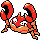
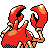

#194
Krabby
Water
Hyper CutterPrevents foes from lowering Attack.
Tough ClawsBoosts moves that makes contact.
Sheer ForceHidden abilityRemoves effects to increase damage.
Base stats Total 325
HP30
Attack105
Defense90
Speed50
Sp. Atk25
Sp. Def25
Evolution
Training & breeding
- Catch rate
- 225 / 255
- Base experience
- 65
- Wild held items
- None
- Gender ratio
- 50% male, 50% female
- Egg groups
- Water 3
- Hatch time
- 20 egg cycles (~5,120 steps)
- Growth rate
- Medium Fast
Level-up moves
LevelMoveTypeCat.PowerAcc.
TM / HM moves 24
TM / HMMoveTypeCat.PowerAcc.
Egg moves 4
LearnedMoveTypeCat.PowerAcc.